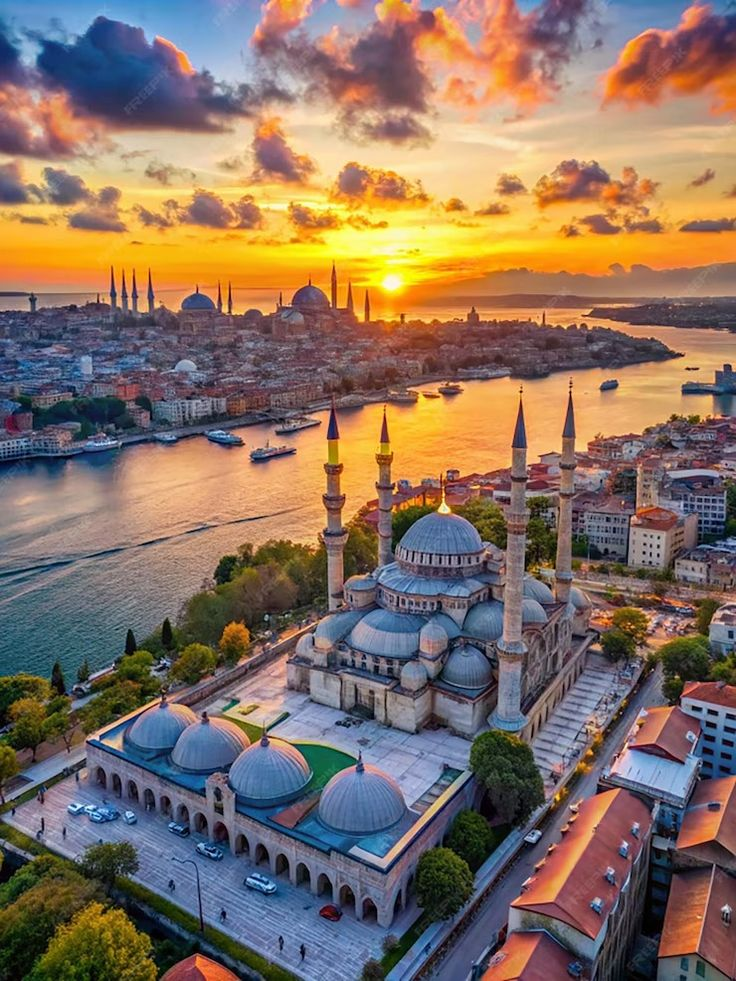
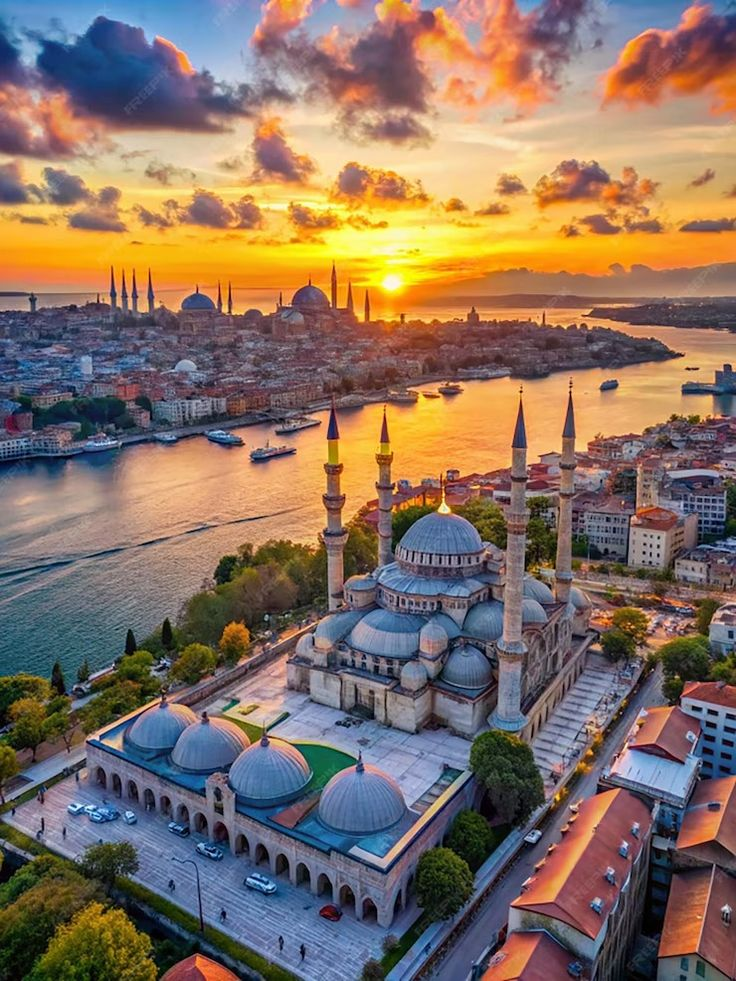
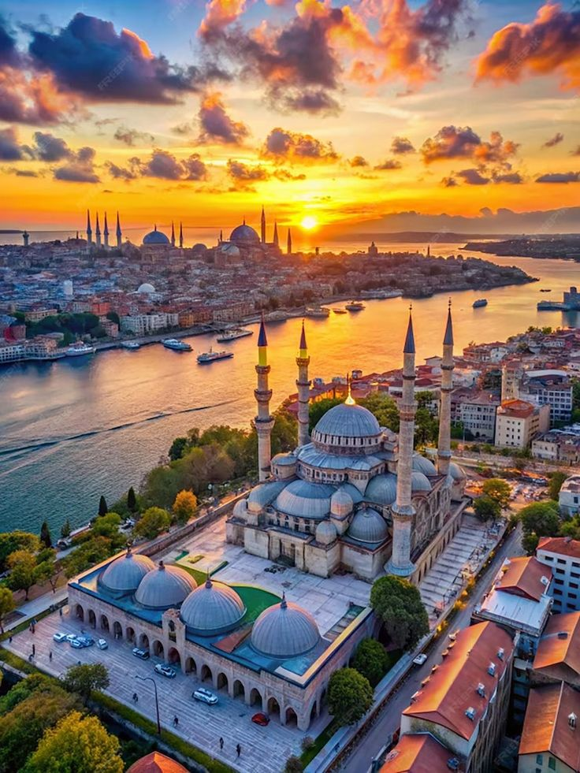

At Midnight Horizon, we don’t just book trips — we craft journeys that awaken the explorer in you. Whether you dream of sipping champagne under the Northern Lights, unwinding on a private island in the Maldives, hiking ancient trails through Machu Picchu, or getting lost in the electric buzz of Tokyo — we make it happen.
From iconic cities to hidden gems, our curated destinations span every continent, tailored for the discerning traveler who seeks more than just a vacation. We specialize in luxurious escapes, cultural immersions, off-the-grid adventures, and once-in-a-lifetime experiences — all personalized to your style.
Let us take you beyond the ordinary. The world is wide. Your horizon starts at midnight.
Discover Europe’s most iconic cities with travel experiences designed for comfort and ease. Walk through the historic streets of London, enjoy the charm of Paris, relax along the coast in Barcelona, and explore the unique blend of cultures in Istanbul. Whether you're interested in sightseeing, food, or simply enjoying a new place, we help you plan simple, enjoyable trips across Europe’s top destinations. With carefully selected accommodations, guided tours, and local tips, our goal is to make your journey smooth, memorable, and tailored to what matters most to you.

Explore the vibrant diversity of North America through three unforgettable cities. Soak up the sun and nightlife in Miami, where tropical beaches meet modern culture. Discover the heart of tradition and flavor in Mexico City, a destination rich with history, art, and world-class cuisine. Head north to Toronto, Canada’s cultural hub, where stunning skylines, diverse communities, and lakeside charm await. Whether you’re after relaxation, exploration, or a taste of something new, our North American getaways offer a perfect blend of experiences for every traveler.


Africa boasts a wide array of fascinating attractions, from its diverse wildlife and stunning landscapes to its rich cultural heritage and historical sites. Key highlights include the Great Migration in Tanzania, Victoria Falls in Zambia and Zimbabwe, and the iconic Table Mountain in Cape Town. Visitors can also explore national parks like Kruger in South Africa, experience the unique Okavango Delta in Botswana, and discover the towering sand dunes of Sossusvlei in Namibia.


Asia boasts a diverse array of attractions, from ancient temples and historical sites to modern marvels and natural wonders. Some of the most interesting include Angkor Wat's intricate carvings, the bustling energy of Hoi An's ancient town, and the breathtaking views from Victoria Peak in Hong Kong. The Taj Mahal's beauty, the Great Wall's historical significance, and the iconic Petronas Twin Towers also draw millions of visitors


Australia offers a diverse range of attractions, from natural wonders like the Great Barrier Reef and Uluru to iconic landmarks like the Sydney Opera House and vibrant cities like Melbourne. It's known for unique wildlife, stunning beaches, and a relaxed lifestyle.


Antarctica offers unique attractions, including dramatic landscapes like glaciers and icebergs, diverse wildlife such as penguins and whales, and historical sites like research stations and explorer's huts. It's also known for its extreme environment, with the lowest temperatures recorded on Earth and being the highest, driest, and windiest continent.